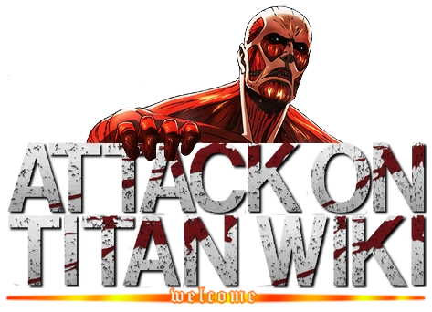
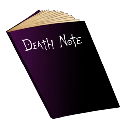
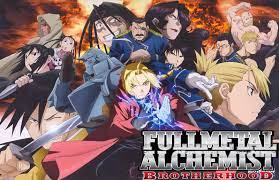
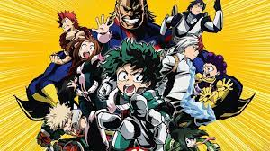
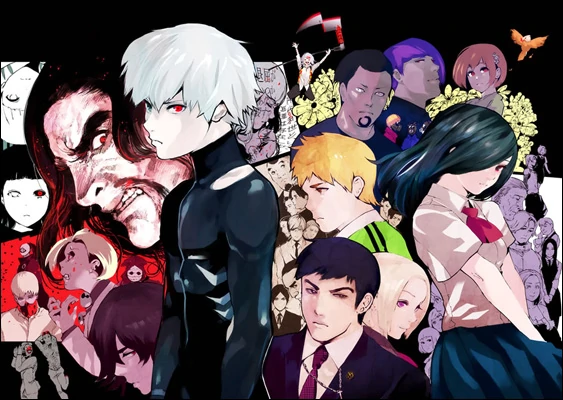

-
 Attack on Titan
"That day, the human race remembered the terror of being dominated by them, and the shame of being held captive in a birdcage..." — Over 100 years ago, a natural predator of humanity appeared: the Titans, giant humanoid but mindless monsters whose sole purpose of existence seemed to be to devour humans. There was an insurmountable gap in power between them and mankind, and as a result, humanity was rapidly exterminated to the brink of extinction. The survivors responded by constructing three concentric walls: Wall Maria, Wall Rose and Wall Sina, which graced them with a century of peace. However, one day a Colossal Titan far larger than any other seen before breached the outer wall, allowing the smaller Titans to invade the human territory and forcing the survivors to retreat to the inner walls. Eren Jaeger, a boy whose mother was eaten during the invasion, vowed to wipe every last Titan off the face of the Earth, and joined the military determined to exact his revenge.
Trailer -
 Deathnote
High school student Light Yagami discovers a supernatural notebook that allows him to kill anyone by writing the victim's name while picturing their face. The story follows his attempts to become a god by creating a New World cleansed of evil by using the notebook, and the complex conflict between himself and all those who try to stop or help him. Death Note is a shounen series created by writer Tsugumi Ohba and artist Takeshi Obata. It began as a manga serialized in Weekly Shounen Jump in 2003, and it has been adapted into a live-action Japanese film series beginning in 2006, an anime series in 2006, a musical in 2015, a live-action television drama in 2015, an American film in 2017, and a German audio drama in 2018.
Trailer -
 FMAB
Fullmetal Alchemist: Brotherhood is the second anime adaptation developed by Bones based on the Fullmetal Alchemist manga by Hiromu Arakawa and is directed by Yasuhiro Irie and written by Hiroshi Ōnogi. It was first announced in the manga series' 20th tankōbon volume.[1][2] The series premiered on April 5, 2009, on MBS-TBS' Sunday 5:00 pm JST anime time block, replacing Mobile Suit Gundam 00, and ran weekly until airing its final episode on July 4, 2010. Voice actors Romi Park and Rie Kugimiya reprised their roles as main characters Edward and Alphonse Elric, respectively.[3] The series is much more similar to the manga, unlike the 2003 anime
Trailer -
 My Hero Academia
People are not born equal, a realization that four-year-old Izuku Midoriya faced when bullied by his classmates who had unique special powers. Izuku was one of the rare cases where he was born with absolutely no unique powers. This did not stop Izuku from pursuing his dream, a dream of becoming a great hero like the legendary All Might. To become the great hero he hopelessly wants to become, he will now join the ranks of one of the highest rated "Hero Academies" in the country: U.A. High School. With the help of his idol All Might, will he be able to claim the ranks and become a true hero?
Trailer -
 Tokyo Ghoul
Strange murders are happening in Tokyo. Due to liquid evidence at the scene, the police conclude the attacks are the results of 'eater' type ghouls. College buddies Kaneki and Hide come up with the idea that ghouls are imitating humans so that's why they haven't ever seen one. Little did they know that their theory may very well become reality.
Trailer